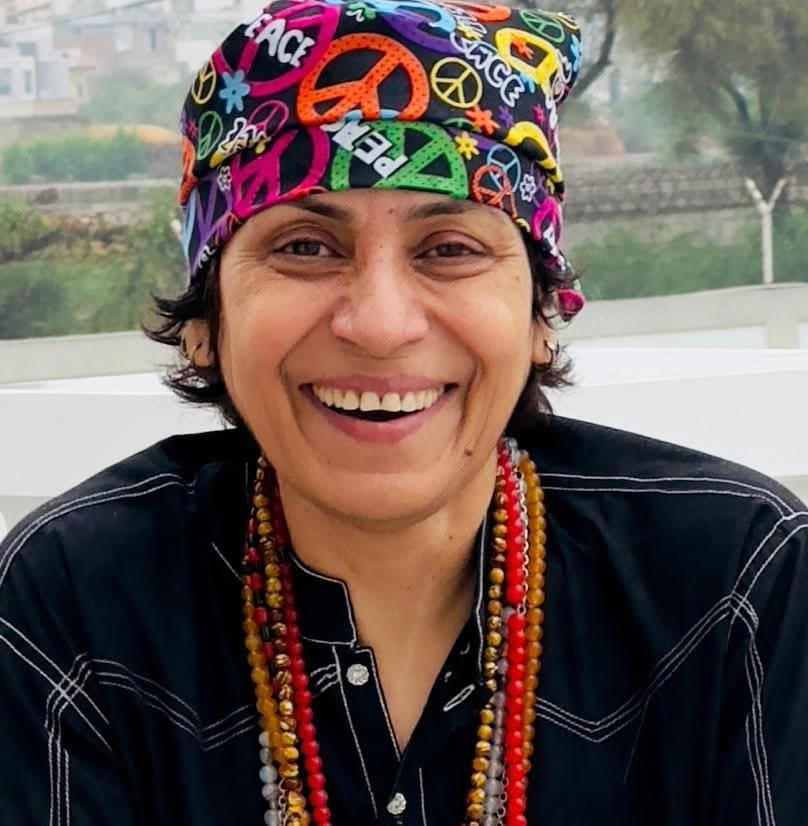

Prof. Amar Sindhu
CONVENER · AYAZ MELO
Prof. Amar Sindhu is a prominent academic, writer and progressive intellectual associated with the cultural and literary journey of Sindh. She is the founder of Khanabadosh Writers' Cafe, Hyderabad, and co-pioneered Ayaz Melo in 2015 with Prof. Dr. Arfana Mallah. As Convener, she provides vision and leadership to the festival, guides its planning and organising committees, and welcomes writers, poets, artists and guests to this cultural platform.